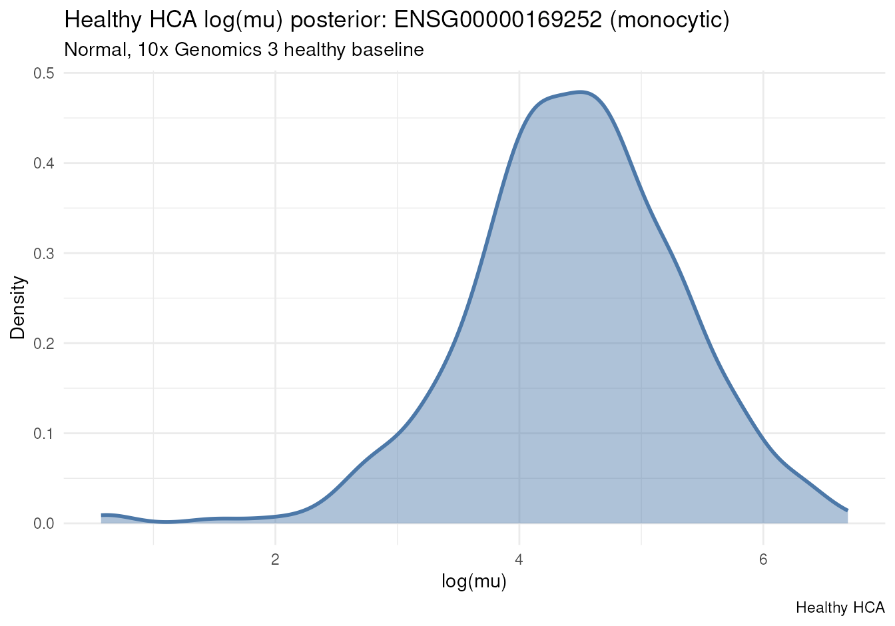
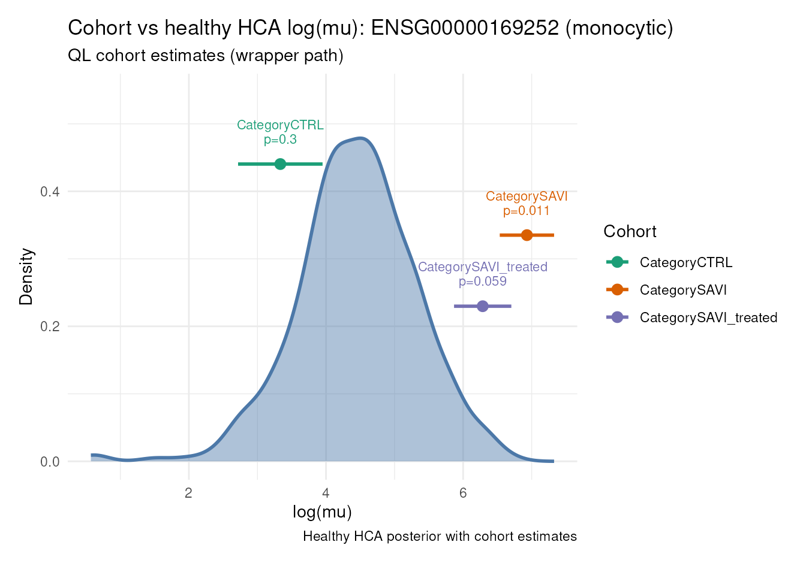

cohort-expression-wrappers.RmdSAVI case study: ADRB2 (ENSG00000169252) in
disease-associated monocytes.
This vignette is the high-level wrapper path for the
standard posteriorHCA case-study settings: one mean per
Category via ~ 0 + Category, with automatic
HCA-scale log_mu. Each wrapper only composes core
functions; it does not reimplement TMM, edgeR QL, brms draws, or Welch
mathematics. For arbitrary edgeR designs (for example
~ 1 + Experiment on a single cohort), see
vignette("cohort-expression-core", package = "posteriorHCA").
HIGH-LEVEL WRAPPER CORE FUNCTIONS CALLED
────────────────── ─────────────────────
scale_to_hca_reference()
├── load_reference_sample()
├── merge_with_reference_sample()
└── calculate_tmm_scaling()
estimate_cohort_logmu()
├── extract counts / metadata
├── stats::model.matrix()
└── estimate_ql()
expression_baseline_draws()
├── load_expression_fit()
├── build_newdata_grid()
└── expression_draws()
compare_cohort_to_hca()
├── summarize_posterior_draws()
└── welch_test_means()Atlas models are keyed by ENSG. Map once with AnnotationDbi (outside
posteriorHCA), then rebuild a Seurat object that keeps
Category.
data(savi_mono)
counts <- as.matrix(Seurat::GetAssayData(savi_mono, layer = "counts"))
mapped <- AnnotationDbi::mapIds(
org.Hs.eg.db,
keys = rownames(counts),
column = "ENSEMBL",
keytype = "SYMBOL",
multiVals = "first"
)
keep <- !is.na(mapped) & !duplicated(mapped)
counts <- counts[keep, , drop = FALSE]
rownames(counts) <- unname(mapped[keep])
meta <- savi_mono[[]][colnames(counts), , drop = FALSE]
savi_ensg <- Seurat::CreateSeuratObject(counts = counts, meta.data = meta)scale_to_hca_reference() is a convenience wrapper around
load_reference_sample() (when reference is a
cell-type string), merge_with_reference_sample(), and
calculate_tmm_scaling(). It stores sample effective library
sizes and the HCA reference log(E_H) for later alignment;
edgeR itself is fitted with offset = log(E_user).
scaled <- scale_to_hca_reference(
savi_ensg,
reference = cell_type
)estimate_cohort_logmu() automates the package’s standard
group-mean workflow: formula = ~ 0 + Category, validate
one-hot group means, call
estimate_ql(formula, contrast = NULL), then add
log(E_HCA) to return HCA-scale group log_mu.
Arbitrary formulas and contrasts belong in the core vignette /
estimate_ql() directly.
cohort_estimates <- estimate_cohort_logmu(
scaled,
formula = ~ 0 + Category,
gene_ensg = gene_ensg
)
cohort_estimates
#> gene group n log_mu mu se
#> 2617 ENSG00000169252 CategoryCTRL 7 3.333432 28.03439 0.6161250
#> 12234 ENSG00000169252 CategorySAVI 5 6.930346 1022.84778 0.3961903
#> 21851 ENSG00000169252 CategorySAVI_treated 5 6.285160 536.55016 0.4177957
#> df
#> 2617 19.03172
#> 12234 19.03172
#> 21851 19.03172Optionally, fit each Category alone with
formula = ~ 1 (still a one-hot / single-group design
supported by this wrapper):
cohort_estimates_by_level <- map_dfr(
unique(as.character(scaled$Category[scaled$sample_role == "user"])),
function(category) {
out <- estimate_cohort_logmu(
subset(scaled, sample_role == "user" & Category == category),
formula = ~ 1,
gene_ensg = gene_ensg
)
out$group <- category
out
}
)
cohort_estimates_by_level
#> gene group n log_mu mu se df
#> 1 ENSG00000169252 CTRL 7 3.395667 29.83455 0.3881143 10.907503
#> 2 ENSG00000169252 SAVI 5 6.899364 991.64355 0.2846382 4.016435
#> 3 ENSG00000169252 SAVI_treated 5 6.294819 541.75773 0.2132725 3.953662expression_baseline_draws() delegates model loading,
query-grid construction and posterior generation to
load_expression_fit(), build_newdata_grid()
and expression_draws().
hca_draws <- expression_baseline_draws(
cell_type = cell_type,
gene_ensg = gene_ensg,
disease_groups = "Normal",
tissue_groups = "blood",
assay_groups = "10x Genomics 3"
)compare_cohort_to_hca() summarizes HCA posterior draws
with summarize_posterior_draws() and delegates the actual
statistical test to welch_test_means().
test_results <- compare_cohort_to_hca(
cohort_estimates,
hca_draws
)
test_results
#> gene group log_mu se n hca_log_mu
#> 1 ENSG00000169252 CategoryCTRL 3.333432 0.6161250 7 4.444192
#> 2 ENSG00000169252 CategorySAVI 6.930346 0.3961903 5 4.444192
#> 3 ENSG00000169252 CategorySAVI_treated 6.285160 0.4177957 5 4.444192
#> hca_se hca_n delta se_diff t_stat df p_value
#> 1 0.8688719 400 -1.110760 1.0651518 -1.042818 50.58617 0.30199060
#> 2 0.8688719 400 2.486154 0.9549373 2.603474 109.58968 0.01050648
#> 3 0.8688719 400 1.840968 0.9641015 1.909517 95.51093 0.05919657
plot_hca_draws(
draws = hca_draws,
subtitle = "Normal, 10x Genomics 3 healthy baseline"
)
plot_cohort_vs_hca(
hca_draws = hca_draws,
cohort_est = test_results,
subtitle = "QL cohort estimates (wrapper path)",
annotate = c("group", "p_value")
)
sessionInfo()
#> R version 4.6.1 (2026-06-24)
#> Platform: x86_64-pc-linux-gnu
#> Running under: Ubuntu 24.04.4 LTS
#>
#> Matrix products: default
#> BLAS: /usr/lib/x86_64-linux-gnu/openblas-pthread/libblas.so.3
#> LAPACK: /usr/lib/x86_64-linux-gnu/openblas-pthread/libopenblasp-r0.3.26.so; LAPACK version 3.12.0
#>
#> locale:
#> [1] LC_CTYPE=en_US.UTF-8 LC_NUMERIC=C
#> [3] LC_TIME=en_US.UTF-8 LC_COLLATE=en_US.UTF-8
#> [5] LC_MONETARY=en_US.UTF-8 LC_MESSAGES=en_US.UTF-8
#> [7] LC_PAPER=en_US.UTF-8 LC_NAME=C
#> [9] LC_ADDRESS=C LC_TELEPHONE=C
#> [11] LC_MEASUREMENT=en_US.UTF-8 LC_IDENTIFICATION=C
#>
#> time zone: UTC
#> tzcode source: system (glibc)
#>
#> attached base packages:
#> [1] stats4 stats graphics grDevices utils datasets methods
#> [8] base
#>
#> other attached packages:
#> [1] purrr_1.2.2 org.Hs.eg.db_3.23.1 AnnotationDbi_1.75.2
#> [4] IRanges_2.47.5 S4Vectors_0.51.9 Biobase_2.73.2
#> [7] BiocGenerics_0.59.12 generics_0.1.4 Seurat_5.5.1
#> [10] SeuratObject_5.4.0 sp_2.2-3 posteriorHCA_0.2.0
#> [13] testthat_3.3.2
#>
#> loaded via a namespace (and not attached):
#> [1] RcppAnnoy_0.0.23 splines_4.6.1
#> [3] later_1.4.8 tibble_3.3.1
#> [5] polyclip_1.10-7 brms_2.23.0
#> [7] fastDummies_1.7.6 lifecycle_1.0.5
#> [9] StanHeaders_2.39.1 edgeR_4.99.4
#> [11] rprojroot_2.1.1 vroom_1.7.1
#> [13] processx_3.9.0 sccomp_2.5.0
#> [15] globals_0.19.1 lattice_0.23-1
#> [17] MASS_7.3-66 backports_1.5.1
#> [19] magrittr_2.0.5 limma_3.99.0
#> [21] plotly_4.12.1 sass_0.4.10
#> [23] rmarkdown_2.32 jquerylib_0.1.4
#> [25] yaml_2.3.12 httpuv_1.6.17
#> [27] otel_0.2.0 sctransform_0.4.3
#> [29] spam_2.11-4 sessioninfo_1.2.4
#> [31] pkgbuild_1.4.8 spatstat.sparse_3.2-0
#> [33] reticulate_1.47.0 cowplot_1.2.0
#> [35] pbapply_1.7-5 DBI_1.3.0
#> [37] RColorBrewer_1.1-3 abind_1.4-8
#> [39] pkgload_1.5.3 GenomicRanges_1.65.4
#> [41] Rtsne_0.17 tensorA_0.36.2.1
#> [43] inline_0.3.21 ggrepel_0.9.8
#> [45] irlba_2.3.7 listenv_1.0.0
#> [47] spatstat.utils_3.2-4 goftest_1.2-3
#> [49] RSpectra_0.16-2 spatstat.random_3.5-1
#> [51] bridgesampling_1.2-1 fitdistrplus_1.2-6
#> [53] parallelly_1.48.0 pkgdown_2.2.1
#> [55] DelayedArray_0.39.6 codetools_0.2-20
#> [57] tidyselect_1.2.1 bayesplot_1.16.0
#> [59] farver_2.1.2 matrixStats_1.5.0
#> [61] spatstat.explore_3.8-2 Seqinfo_1.3.2
#> [63] jsonlite_2.0.0 ellipsis_0.3.3
#> [65] progressr_1.0.0 ggridges_0.5.7
#> [67] survival_3.8-11 systemfonts_1.3.2
#> [69] tools_4.6.1 ragg_1.5.2
#> [71] ica_1.0-3 Rcpp_1.1.2
#> [73] glue_1.8.1 SparseArray_1.13.2
#> [75] gridExtra_2.3.1 BiocBaseUtils_1.15.1
#> [77] qs2_0.3.1 xfun_0.60
#> [79] MatrixGenerics_1.25.0 distributional_0.8.1
#> [81] usethis_3.2.1 dplyr_1.2.1
#> [83] withr_3.0.3 loo_2.10.1
#> [85] instantiate_0.2.3 fastmap_1.2.0
#> [87] callr_3.8.0 digest_0.6.39
#> [89] R6_2.6.1 mime_0.13
#> [91] textshaping_1.0.5 scattermore_1.2
#> [93] tensor_1.5.1 spatstat.data_3.1-9
#> [95] RSQLite_3.53.3 tidyr_1.3.2
#> [97] data.table_1.18.6.1 S4Arrays_1.13.0
#> [99] httr_1.4.9 htmlwidgets_1.6.4
#> [101] uwot_0.2.5 pkgconfig_2.0.3
#> [103] gtable_0.3.6 blob_1.3.0
#> [105] lmtest_0.9-40 S7_0.2.2
#> [107] SingleCellExperiment_1.35.2 XVector_0.53.0
#> [109] brio_1.1.5 htmltools_0.5.9
#> [111] dotCall64_1.2 scales_1.4.0
#> [113] png_0.1-9 posterior_1.7.0
#> [115] spatstat.univar_3.2-0 rstudioapi_0.19.0
#> [117] knitr_1.52 tzdb_0.5.0
#> [119] reshape2_1.4.5 curl_8.0.0
#> [121] coda_0.19-4.1 checkmate_2.3.4
#> [123] nlme_3.1-171 cachem_1.1.0
#> [125] zoo_1.9-0 stringr_1.6.0
#> [127] KernSmooth_2.23-27 parallel_4.6.1
#> [129] miniUI_0.1.2 desc_1.4.3
#> [131] pillar_1.11.1 grid_4.6.1
#> [133] vctrs_0.7.3 RANN_2.6.3
#> [135] promises_1.5.0 stringfish_0.19.2
#> [137] xtable_1.8-8 cluster_2.1.8.3
#> [139] evaluate_1.0.5 readr_2.2.0
#> [141] locfit_1.5-9.12 mvtnorm_1.4-2
#> [143] cli_3.6.6 compiler_4.6.1
#> [145] rlang_1.3.0 crayon_1.5.3
#> [147] rstantools_2.7.1 future.apply_1.20.2
#> [149] labeling_0.4.3 ps_1.9.3
#> [151] forcats_1.0.1 plyr_1.8.9
#> [153] fs_2.1.0 rstan_2.32.7
#> [155] stringi_1.8.9 QuickJSR_1.11.0
#> [157] viridisLite_0.4.3 deldir_2.0-4
#> [159] Biostrings_2.81.9 devtools_2.5.2
#> [161] spatstat.geom_3.8-2 V8_8.2.0
#> [163] Brobdingnag_1.2-9 Matrix_1.7-6
#> [165] RcppHNSW_0.7.0 hms_1.1.4
#> [167] patchwork_1.3.2 bit64_4.8.6
#> [169] future_1.75.0 ggplot2_4.0.3
#> [171] statmod_1.5.2 KEGGREST_1.53.6
#> [173] shiny_1.14.0 SummarizedExperiment_1.43.0
#> [175] ROCR_1.0-12 igraph_2.3.3
#> [177] memoise_2.0.1 RcppParallel_6.2.1
#> [179] bslib_0.12.0 bit_4.6.0